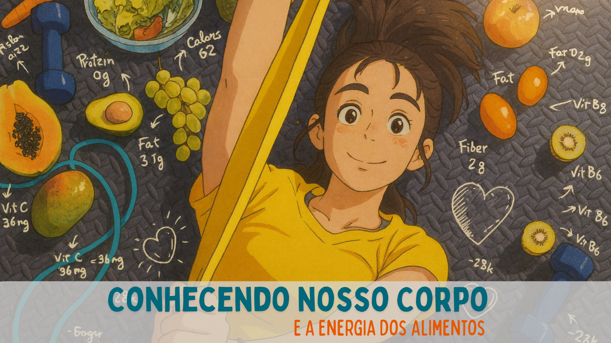

Nesta atividade, você vai explorar temas relacionados ao funcionamento do corpo humano e à forma como suas escolhas diárias influenciam saúde, energia e bem-estar.
O objetivo é que, após a leitura, você compreenda como alimentação, movimento, sono e saúde mental se conectam e moldam sua rotina. Refletir sobre suas escolhas ajuda a identificar hábitos que favorecem sua saúde e aqueles que podem ser ajustados.
Para desenvolver esta proposta:
Registre o que você compreendeu sobre alimentação, energia, movimento e saúde integral.
Acessar questionárioE-BOOK: O corpo humano funciona a partir das escolhas que fazemos, 2025.
HEYZINE Flipbooks — https://heyzine.com
ARAUJO, Livia Mendanha; MURAOKA, Sarah Mendes de Oliveira; ALVES, Rayane Campos; FERNANDES, Paolla Algarte; MENDES, Marcelo Porto. Psiconutrição: o efeito da alimentação na saúde mental. 2001–2023.
GADELHA, Jhonatan Gomes et al. Alimentação e exercício físico: os benefícios proporcionados à saúde. Revista Contemporânea, v.4, n.2, 2024.
GRANJA, Myrna Maia Tobias et al. O papel da alimentação na cognição e prevenção de doenças neurodegenerativas. Revista Atenas Higeia, v.6, n.1, 2024.
MESQUITA, Maria Lucinete Nunes; LEÃO, Graciele Cristina Silva. Efeitos da alimentação e exercício físico na qualidade do sono em indivíduos ativos. R. Bras. Nutr. Esportiva, v.18, n.114, 2025.
NASCIMENTO, Fernanda Galdino do et al. Emagrecimento: exercício, alimentação e fisiologia. Revista Presença, v.10, n.22, 2024.
NEGRETTI, Matheus. Nutrição, exercício físico e desempenho. TCC — UNESP, 2022.
TELES, Kátia Inêz; BELO, Lucas Lima Andrade; SILVA, Heslley Machado. Efeitos da alimentação na evolução humana. Conexão Ciência, v.12, n.3, 2017.
VILARTA, Roberto (org.). Alimentação saudável, atividade física e qualidade de vida. Campinas: IPES Editorial, 2007.